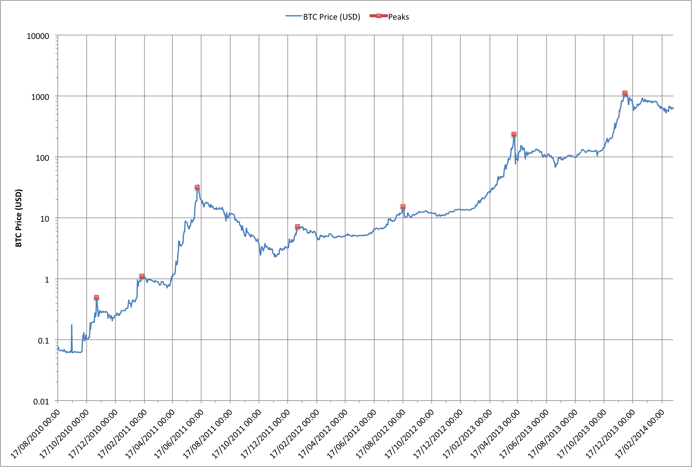

Dave Hudsonhashingit.com |
There’s something odd about the fluctuations in the price of Bitcoins. The data shows a set of spikes when the price jumps up and then falls back somewhat and levels out. This wouldn’t be so unusual if the spikes occurred intermittently but in the case of Bitcoins the spikes happen with a very surprising regularity!
Let’s look at the graph:

The first thing to note is that the graph is plotted with a logarithmic Y axis so each step indicates a price point ten times larger than the one below. Using a log scale means that we see patterns in the relative change in price much more easily, rather than changes in the actual value.
There are 7 major spikes in the Bitcoin price starting on 17th November 2010 and finishing on the 30th November 2013. If we ignore the spike on 10th February 2011 the other 6 spikes have an amazingly consistent spacing!
All of the major price spikes also show another remarkable similarity. In each case the price ramps up very quickly, hits its highest point for a a day or two and then slowly drops off.
So there are a few big questions (to which I don’t have any answers right now):
Does anyone have any data that might explain this?
Data for this article was sourced via blockchain.info